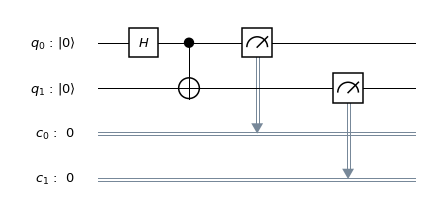
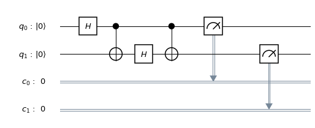

Bell State
The Bell states, a concept in quantum information science, are specific quantum states of two qubits that represent the simplest (and maximal) examples of quantum entanglement. The Bell states are a form of entangled and normalized basis vectors. This normalization implies that the overall probability of the particle being in one of the mentioned states is 1.[Wikipedia]
Import 'Qiskit' libraries
%matplotlib inline # Importing standard Qiskit libraries and configuring account from qiskit import QuantumCircuit,QuantumRegister,ClassicalRegister, execute, Aer, IBMQ from qiskit.compiler import transpile, assemble from qiskit.tools.jupyter import * from qiskit.visualization import *
Bell circuit
Design a Bell state circuit.
num_qubits = 2; num_bits = 2; bell = QuantumCircuit(2,2) bell.h(0) bell.cx(0, 1) bell.measure([0,1], [0,1]) bell.draw(output='mpl')

Manual approach
- initial state = |00>
- After application of Hadamard Gate: \( \frac{1}{\sqrt{2}}|00> + \frac{1}{\sqrt{2}}|10> \)
- After application of CNOT Gate: \( \frac{1}{\sqrt{2}}|00> + \frac{1}{\sqrt{2}}|11> \)
Simulation
simulator = Aer.get_backend('qasm_simulator') result = execute(bell, simulator).result() counts = result.get_counts(bell) plot_histogram(counts, title='Bell-State counts')

Extended Bell circuit -1
Extend the bell state circuit by adding one more Hadamard gate on second qubit and CNOT gate.
num_qubits = 2; num_bits = 2; bell = QuantumCircuit(2,2) bell.h(0) bell.cx(0, 1) bell.h(1) bell.cx(0, 1) bell.measure([0,1], [0,1]) bell.draw(output='mpl')

Manual approach:
- Initial state = |00>
- After application of Hadamard Gate: \( \frac{1}{\sqrt{2}}|00> + \frac{1}{\sqrt{2}}|10> \)
- After application of CNOT Gate: \( \frac{1}{\sqrt{2}}|00> + \frac{1}{\sqrt{2}}|11> \)
- After application of Hadamard Gate: \( \frac{1}{2}|00> + \frac{1}{2}|01> + \frac{1}{2}|10> - \frac{1}{2}|11> \)
- After application of CNOT Gate: \( \frac{1}{2}|00> + \frac{1}{2}|01> + \frac{1}{2}|11> - \frac{1}{2}|10> \)
Simulation
simulator = Aer.get_backend('qasm_simulator')
result = execute(bell, simulator).result()
counts = result.get_counts(bell)
plot_histogram(counts, title='Bell-State counts')

Extended Bell circuit - 2
Extend the bell state circuit by adding two more Hadamard gates and two CNOT gates with three qubits.
n =3 q = QuantumRegister(n) c = ClassicalRegister(n) circ = QuantumCircuit(q,c) circ.h(q[0]) circ.cx(q[0], q[1]) circ.h(q[1]) circ.cx(q[1], q[2]) circ.h(q[2]) circ.measure(q,c) # Change the background color in mpl style = {'backgroundcolor': 'lightgreen'} circ.draw(output='mpl', style = style)

Manual approach
- Initial state: |000>
- After Hadamard Gate : \( \frac{1}{\sqrt{2}}|000> + \frac{1}{\sqrt{2}}|100> \)
- After CNOT Gate : \( \frac{1}{\sqrt{2}}|000> + \frac{1}{\sqrt{2}}|110> \)
- After Hadamard Gate :\( \frac{1}{{2}}|000> + \frac{1}{{2}}|010> + \frac{1}{{2}}|100> - \frac{1}{{2}}|110>\)
- After CNOT Gate :\( \frac{1}{{2}}|000> + \frac{1}{{2}}|011> + \frac{1}{{2}}|100> - \frac{1}{{2}}|111>\)
- After Hadamard Gate :\( \frac{1}{2\sqrt{2}}( |000> + |001> + |010> - |011> + |100> + |101> - |110> + |111>) \)
Simulation
simulator = Aer.get_backend('qasm_simulator') result = execute(circ, simulator).result() counts = result.get_counts(circ) plot_histogram(counts, title='Bell-State counts')

Reference
- https://www.quantum-inspire.com/kbase/hadamard/